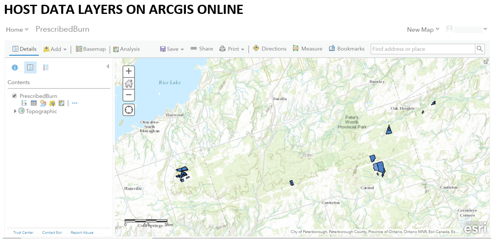
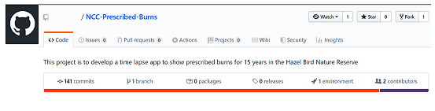
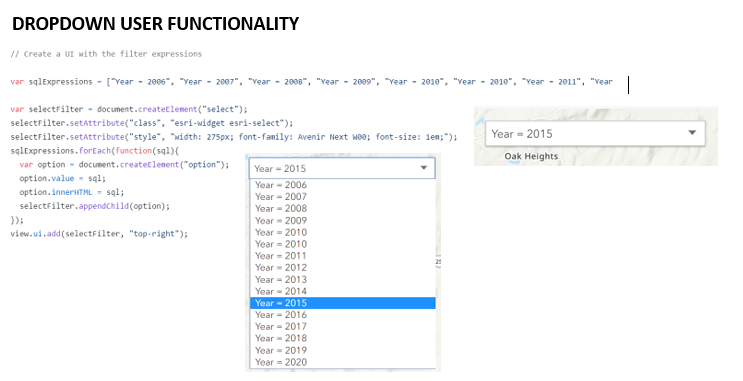

GEOM99 Web GIS Development 2020
The Project Process
Step 1
ORIGINAL Problem Statement
Title: UX/UI Time Series Web Application
Ideal: An interactive web map which allows users to intuitively explore the history of prescribed burns in the Rice Lake Plains.
Reality: No website currently exists and spatial data is inaccessible to the public, so there is no way to engage the community of the Rice Lake Plains to learn about past prescribed burns. A proof of concept (with existing data) will be created until the validity of our data can be confirmed.
Consequences: Without this web application, the Nature Conservancy of Canada would not have the ability to effectively communicate prescribed burn activities to the public and their stakeholders.
Proposal: Create a web application that features an interactive time series of the Nature Conservancy of Canada’s burned land parcels over a 15-year period.
Step 2
Research Possible Solutions
I. JavaScript API: Filter a Feature Layer
Advantages: Uses ESRI products (preferred by client), server-side and client-side filter available to configure, Can display parcel and prescribed burn sites by year, easy for user to filter by year, map can be integrated within a website, host online or run on separate server, and can add additional add-ons to the application (like the TimeSlider)
Disadvantage: Does not provide a simplified view of temporal data
II. JavaScript API: TimeSlider
Advantages: Uses ESRI products (preferred by client), an interactive graphic used to display temporal data, and host online or run on separate server
Disadvantage: May not be very useful for the user to quickly find data on a specific year
III. Geocortex: Toolbar with bookmarks, filter, and query functionality
Advantages: High application functionality with toolbars, can perform queries to find specific year and parcel information, can easily explore all the layers from the sidebar, and a lot of options in terms of add-ons (time slider available)
Disadvantages: Geocortex Essentials technology runs on top of ESRI products and the client does not want to use Geocortex
IV. Web AppBuilder for ArcGIS: Time slider widget
Advantages: No coding required, ready-to-use time slider widget available, uses ESRI products (preferred by client), and host online or run on separate server
Disadvantage: No coding means limited flexibility on application style and content
FINAL Problem Statement
Title: UX/UI Interactive Filtering Web Application
Ideal: An interactive web map which allows users to intuitively explore prescribed burns in the NCC’s parcels in the Rice Lake Plains over a 15-year period.
Reality: No website currently exists, and spatial data is inaccessible to the public, so there is no way to engage the community of the Rice Lake Plains to learn about past prescribed burns. A proof of concept (with existing data) will be created until the validity of our data can be confirmed.
Consequences: Without this web application, the Nature Conservancy of Canada would not have the ability to effectively communicate prescribed burn activities to the public and their stakeholders.
Proposal: Create a web application that features an interactive filter to show the Nature Conservancy of Canada’s burned areas by year and by parcel.
Step 3
Build Solutions/Continue to Research and Troubleshoot
Found Additional Solutions:
V. Web AppBuilder for ArcGIS: Group Filter Widget
Advantages: No coding required, ready-to-use group filter widget available, uses ESRI products (preferred by client), host online or run on seperate server, ability to apply filter on one or more layers within the same map
Disadvantage: Limited flexibility on application style and content, will require code reworking to filter the parcel name and year
VI. JavaScript API: Query a Feature Layer
Advantages: Uses ESRI products (preferred by client), Server-side and client-side filter available, potentiall could display parcel and prescribed burn sites by year, easy for user to filter by year, map can be integrated within a website, host online or run on seperate server, can add additonal add-ons to the application
Disadvantage: Does not provide dropdown functionality, does not provide a simplified view of spatial data (like a time-slider)
Our Final Decision: USE THE JAVASCRIPT API: FILTER A FEATURE LAYER
Explanation: This solution gives a dropdown option to the user to choose the year that they are looking for. This adds user functionality that does not exist with time-slider solutions. With additional configurement, there may be a possibilty to write SQL expressions that filter the PB sites by year AND by parcel name. This is the utlimate goal for the web application because this is what the end-user has expressed as their need. The ability to code for additional features (like pop-ups) gives this option an added boost above the rest.
1. Prepare Data

2. Create Webpage

3. Configure Web Application
4. Secure Data
5. Test UX/UI

6. Final Web Application
Problems
Outcomes: We have decided that for the time being our project will become a PROOF OF CONCEPT only. Meaning that we will be using Alberta wildfire data to code in our web application. This is due to the fact that, we are still unsure if we are able to publically host the NCC's PB data and we know that we are not allowed to host the MNRF parcel data online. Therefore, we will need to use a utility service URL that can only be used with a server. We do not have access to a server at this point, therefore will create a proof of concept to show our JavaScript abilities.